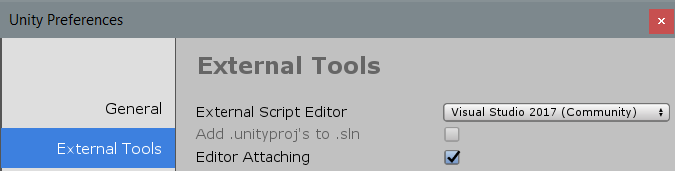

在 Unity 中调试 C# 代码
使用调试器可以在应用程序或游戏运行的同时检查源代码。Unity 支持使用以下代码编辑器来调试 C# 代码：
Visual Studio（包含 Visual Studio Tools for Unity 插件）
Visual Studio for Mac
Jetbrains Rider
Visual Studio Code
尽管这些代码编辑器所支持的调试器特性略有不同，但它们都提供了一些基本功能，如断点、单步执行和变量检查。
Unity 中的托管代码调试可以在除 WebGL 之外的所有平台上运行。使用 Mono 和 IL2CPP 脚本后端都是可以的。
配置代码编辑器
Visual Studio (Windows)
Unity Editor 安装程序包括一个选项，允许安装包含 Visual Studio Tools for Unity 插件的 Visual Studio。建议通过这种方式设置 Visual Studio 以便在 Unity 中执行调试。
如果您的计算机上已经安装了 Visual Studio，请使用其 Tools > Extensions and Updates 菜单来查找和安装 Visual Studio Tools for Unity 插件。
Visual Studio for Mac
Unity Editor 安装程序包括一个选项，允许安装 Visual Studio for Mac。建议通过这种方式设置 Visual Studio for Mac 以便在 Unity 中执行调试。
如果您的计算机上已经安装了 Visual Studio for Mac，请使用其 Extension Manager 来查找和安装 Visual Studio Tools for Unity 插件。
JetBrains Rider
通过默认方式安装的 JetBrains Rider 可以在 Windows 或 Mac 上的 Unity 中调试代码。请访问 JetBrains 网站进行安装。
VS Code
VS Code 要求安装一个扩展才能在 Unity 中调试代码。请遵循此扩展特定的说明来安装此扩展。
Unity Preferences
安装了代码编辑器后，请选择 Unity > Preferences > External Tools__，然后将 External Script Editor__ 设置为您选择的代码编辑器。 
在 Editor 中调试
当 Unity Editor 处于播放模式时，可以调试在 Unity Editor 中运行的脚本代码。在尝试调试之前，请确保在 Unity Preferences 中启用了 Editor Attaching 选项。此选项会让 Editor 采用即时 (JIT) 编译方法并借助调试信息来执行托管代码。
首先，进入代码编辑器脚本，根据调试器应该停止的脚本代码行位置，在该位置设置一个断点。例如，在 Visual Studio 中，根据希望停止调试器的代码行，单击代码左侧的列（如下所示）。行号旁边会出现一个红色的圆，并会高亮显示这一行。
接下来，将代码编辑器连接到 Unity Editor。此选项根据代码编辑器而有所不同，通常是与代码编辑器的正常调试过程不同的选项。在 Visual Studio 中，此选项如下所示：
一些代码编辑器可能允许选择要调试的 Unity 实例。例如，在 Visual Studio 中，__Debug > Attach Unity Debugger__ 选项可显示此功能。
将代码编辑器连接到 Unity Editor 后，回到 Unity Editor 并进入播放模式。当执行断点处的代码时，调试器将停止，例如：
当代码编辑器处于断点时，您可以逐步查看变量的内容。只有在调试器中选择了继续选项或停止调试模式之后，Unity Editor 才会响应。
在 Player 中调试
要调试在 Unity Player 中运行的脚本代码，请确保在构建 Player 之前启用“Development Build”和“Script Debugging”选项（这些选项位于 File > Build Settings 中）。启用“Wait For Managed Debugger”选项可使 Player 等待调试器连接之后再执行脚本代码。

要将代码编辑器连接到 Unity Player，请选择 Player 的 IP 地址（或机器名称）和端口。在 Visual Studio 中，“Attach To Unity”选项的下拉菜单如下所示：
Debug > Attach Unity Debugger 选项如下所示：
请确保将调试器连接到 Player，而不是连接到 Unity Editor（如果两者都在运行）。连接调试器后，可以继续正常进行调试。
在 Android 和 iOS 设备上调试
Android
调试 Android 设备上运行的 Player 时，请通过 USB 或 TCP 连接到设备。例如，要在 Visual Studio (Windows) 中连接到 Android 设备，请选择 Debug > Attach Unity Debugger 选项。此时将显示运行 Player 实例的设备列表：
在这种情况下，手机通过 USB 和 Wi-Fi 连接到与运行 Unity Editor 和 Visual Studio 的工作站所在的相同网络中。
iOS
调试 iOS 设备上运行的 Player 时，请通过 TCP 连接到设备。例如，要在 Visual Studio (Mac) 中连接到 iOS 设备，请选择 Debug > Attach Unity Debugger 选项。此时将显示运行 Player 实例的设备列表：
确保设备只有一个有效网络接口（建议使用 Wi-Fi，关闭蜂窝数据），并确保 IDE 与设备之间没有防火墙阻止 TCP 端口（上面截屏中端口号为 56000）。iOS 不支持通过 USB 进行调试。
调试器故障排除
调试器出现的大多数问题都是由于代码编辑器无法找到 Unity Editor 或 Player。这意味着不能正确连接调试器。因为调试器通过 TCP 连接到 Editor 或 Player，所以连接问题通常是由网络造成的。可以采取以下几个步骤来对基本连接问题进行故障排除。
确保将调试器连接到正确的 Unity 实例
可以将代码编辑器连接到本地网络上已启用调试的任何 Unity Editor 或 Unity Player。连接调试器时，确保连接到正确的实例。如果您知道运行 Unity Player 的设备的 IP 地址或计算机名称，这将有助于找到正确的实例。
验证与 Unity 实例的网络连接
代码编辑器在查找要调试的 Unity 实例时使用的机制与 Unity Profiler 使用的机制相同。如果代码编辑器找不到其应该找到的 Unity 实例，请尝试将 Unity Profiler 连接到该实例。如果 Unity Profiler 也找不到该实例，有可能运行代码编辑器的计算机和/或运行 Unity 实例的计算机上存在防火墙。如果有防火墙，请参阅下文有关防火墙设置的信息。
确保设备只有一个激活的网络接口
许多设备有多个网络接口。例如，手机可以同时具有激活的蜂窝连接和激活的 Wi-Fi 连接。为了使用 TCP 正确连接调试器，IDE 需要与设备上的正确接口建立网络连接。例如，如果您计划通过 Wi-Fi 进行调试，请确保将设备置于飞行模式以禁用所有其他接口，然后启用 Wi-Fi。
可以通过查看 Unity Player 日志来确定 Player 要求 IDE 使用的 IP 地址。查找日志中如下所示的部分：
Multi-casting "[IP] 10.0.1.152 [Port] 55000 [Flags] 3 [Guid] 2575380029 [EditorId] 4264788666 [Version] 1048832 [Id] iPhonePlayer(Joshs-iPhone):56000 [Debug] 1 [PackageName] iPhonePlayer" to [225.0.0.222:54997]...
此消息表明 IDE 将尝试使用 IP 地址 10.0.1.152 和端口 56000 来连接到设备。运行 IDE 的计算机必须能访问此 IP 地址和端口。
检查防火墙设置
Unity 实例通过 TCP 连接与代码编辑器进行通信。在大多数 Unity 平台上，都是在任选的端口上进行这种 TCP 连接。通常，您不需要知道这个端口，因为代码编辑器应该能自动检测到这个端口。如果没有检测到，请尝试使用网络分析工具来确定在运行代码编辑器的计算机上或者在运行 Unity 实例的计算机或设备上，哪些端口可能被阻止。找到这些端口后，请确保防火墙允许访问运行代码编辑器的机器上的端口和运行 Unity 实例的机器上的端口。
验证托管调试信息是否可用
如果调试器已经连接，但断点未加载，表示调试器可能无法找到代码的托管调试信息。托管代码调试信息存储在磁盘上托管程序集（.dll 文件）旁边名为 .pdb 的文件中。
如果启用了正确的偏好设置和构建选项（见上文），Unity 会自动生成此调试信息。但是，Unity 不能为项目中的托管插件生成此调试信息。如果关联的 .pdb 文件位于磁盘上 Unity 项目托管插件的旁边，则可以从托管插件中调试代码。
防止设备锁定
如果用于调试应用程序的设备有屏幕锁，请务必禁用屏幕锁。屏幕锁会导致调试器断开连接，并阻止其重新连接。在托管代码调试期间，最好避免锁定屏幕。如果屏幕已经锁定，应在设备上重新启动应用程序，然后调试器才能再次连接。
2018–09–06 页面已发布
在 2018.2 版中添加了“托管代码调试”